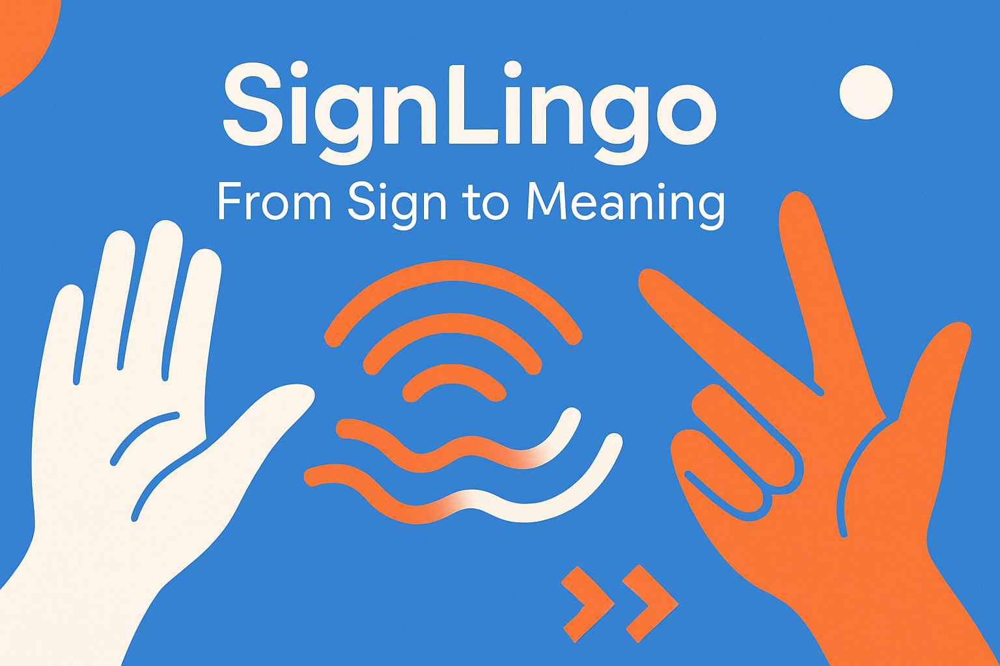

Imagine um mundo onde cada gesto é compreendido.
Bem-vindo ao SignLingo, a ponte que conecta a Língua de Sinais ao mundo escrito. Use sua câmera para fazer um sinal e, em segundos, receba a tradução instantânea para o português.

Como funciona?
Mostre o Sinal
Use sua webcam ou faça o upload de uma foto.
IA Analisa
Nossa inteligência artificial avançada decifra a configuração de mão, movimento e expressão facial.
Receba a Tradução
A palavra ou expressão correspondente em português aparece na sua tela.
Tradutor
Democratizando a Comunicação, Um Sinal de Cada Vez
O SignLingo é mais do que um tradutor; é uma ferramenta de inclusão e empoderamento. Desenvolvido com tecnologia de ponta em Visão Computacional e Aprendizado de Máquina, nossa plataforma tem a missão de quebrar as barreiras de comunicação entre surdos e ouvintes.
Nosso foco é simples e direto: traduzir um sinal estático (uma foto) para a palavra escrita correspondente. É o recurso perfeito para:
Pais e Familiares de Crianças Surdas
Aprenda o significado dos sinais que seu filho está usando e acelere o processo de aprendizado em conjunto.
Estudantes de Libras
Teste seu conhecimento e verifique se está fazendo os sinais corretamente.
Professores e Educadores
Incorpore tecnologia assistiva em sala de aula para criar um ambiente verdadeiramente inclusivo.
Qualquer Pessoa Curiosa
Veja uma pessoa fazendo um sinal em uma foto ou vídeo e descubra rapidamente o que significa.
O que nos torna únicos:
Tradução Instantânea por Imagem
Basta uma foto para obter uma tradução precisa.
Banco de Dados em Expansão
Nossa IA é continuamente treinada com milhares de sinais, abrangendo um vocabulário cada vez maior.
Foco na Acessibilidade
Interface limpa, intuitiva e projetada para ser usada por todos.
Precisão que Evolui
Quanto mais o sistema é usado, mais inteligente e preciso ele se torna.
Nossa Missão
Acreditamos que a comunicação é um direito humano fundamental. Ao tornar a Língua de Sinais mais acessível e compreensível para todos, estamos construindo um futuro onde ninguém fica para trás por causa de uma barreira linguística.
Junte-se a nós nessa jornada. Faça um sinal e descubra um novo mundo de possibilidades.
Funcionalidades para Destaque
Tradutor por Foto/Foto em Tempo Real
Envie uma imagem ou use sua câmera ao vivo.
Dicionário Visual Integrado
Explore sinais e seus significados em um catálogo organizado.
Precisão com Feedback
O sistema aprende com correções dos usuários para melhorar continuamente.
Acessível em Qualquer Dispositivo
Funciona perfeitamente no celular, tablet ou computador.
Seguro e Privado
Suas imagens são processadas com total respeito à sua privacidade.